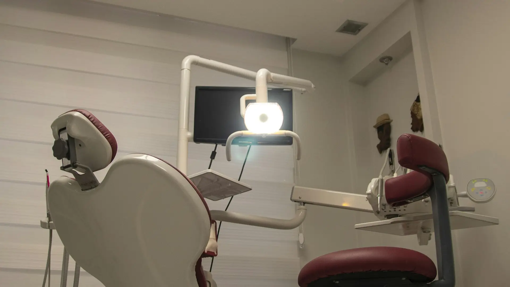
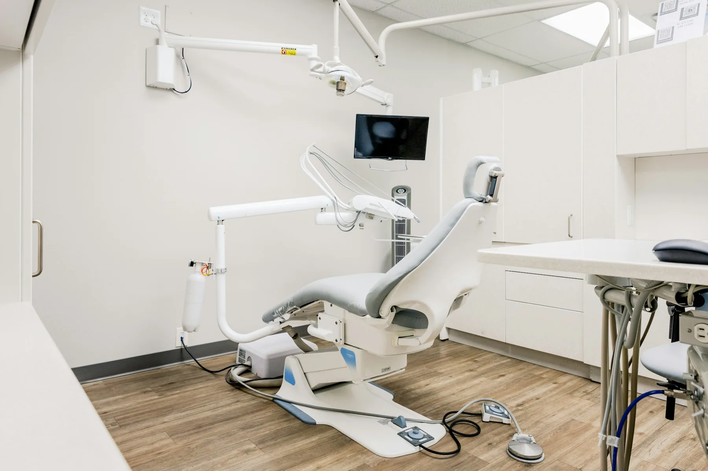
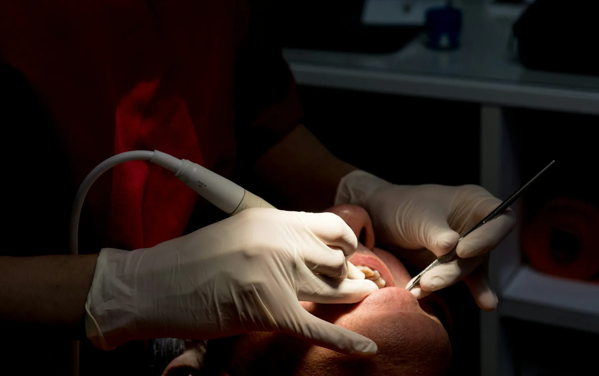

원장 사진
[교체 필요]
[교체 필요]
[원장명] 대표원장
[전문의 과목 · 예: 치과보철과 전문의]
- [출신 치과대학 / 수련 병원]
- [학회 정회원 · 인정의]
- [주요 경력]

01 · PHILOSOPHY
[치과명]은 환자분의 구강 상태를 정밀하게 살핀 뒤, 가능한 치료 방법과 각각의 장단점, 기간과 비용을 먼저 설명드립니다. 결정은 충분히 이해하신 후에 하셔도 늦지 않습니다.
“환자분께 권하는 치료는
제 가족에게도 권할 수 있는 치료여야 합니다.”
02 · DOCTORS
[전문의 과목 · 예: 치과보철과 전문의]
[전문 분야 · 예: 치과교정과 전문의]
04 · FACILITY


05 · HOURS
점심시간 [13:00 – 14:00] · 일요일·공휴일 휴진
[야간진료 요일 안내]
| 월 · 수 · 금 | [09:30 – 18:30] |
|---|---|
| 화 · 목 | [09:30 – 20:30] 야간 |
| 토요일 | [09:30 – 14:00] 점심시간 없음 |
| 일 · 공휴일 | 휴진 |
06 · LOCATION